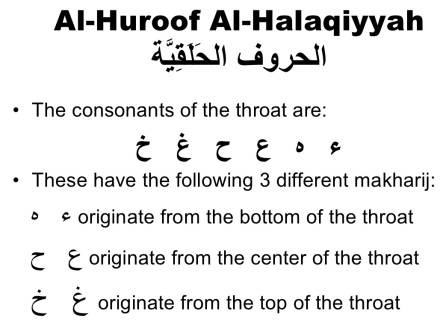
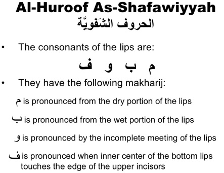
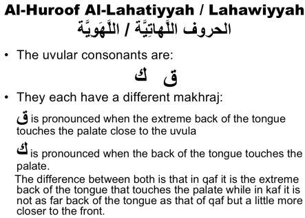
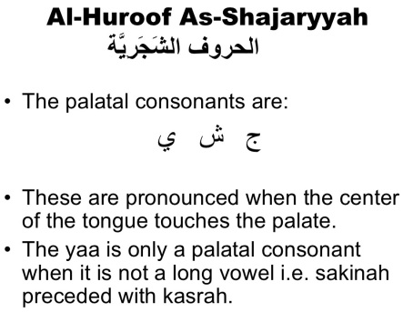
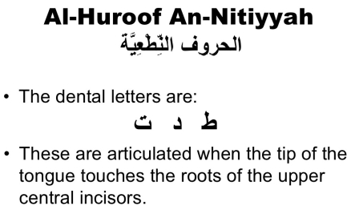
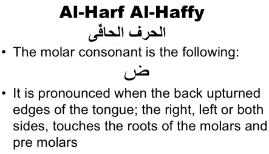
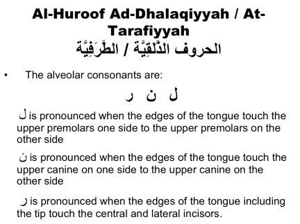
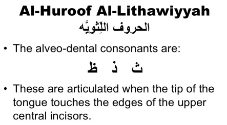
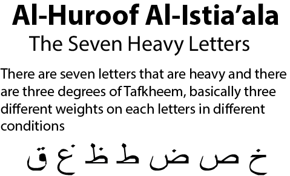
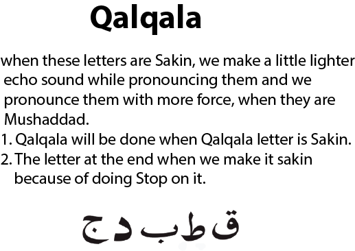

Where the Arabic letters originate from
To know the origin of any letter of the Arabic Alphabet place a Sukoon (ْ ) on it and precede
it with an Alif (أ) and a Fatha (َ )
Example: أَبْ will give us the origin of the letter بَ








These three letters are pronounced when your tounge slightly stuck out

-
Highest Tafkheem
This is where a full mouth letter has a Fatha then followed by an Alif. Upon such letters you
put a really strong emphasis more so than you would if it just had a Fatha without an Alif.
-
Second Tafkheem
Simple when a full mouth letter has just a Fatha without a following Alif. This case place
emphasis on the letter however not as much emphasis as you would do for the Highest Tafkheem
-
Third Tafkheem
This is a full mouth letter that has a kasra, in this case you do not emphasise as much, and
in some cases not at all, as you would do for the previous two degree's of emphasis.
